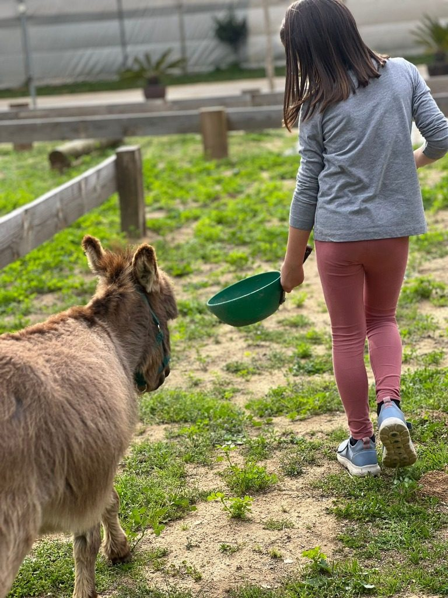
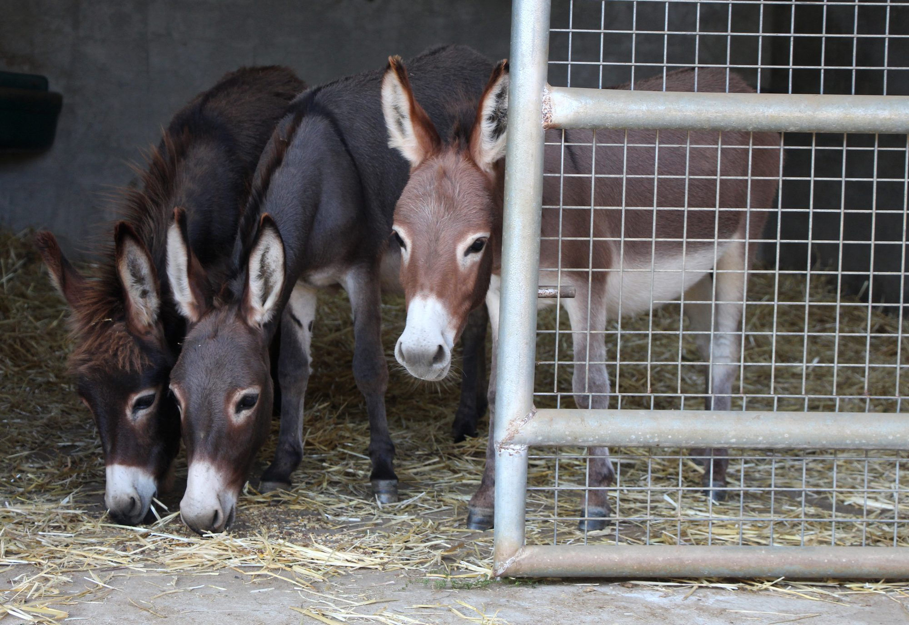
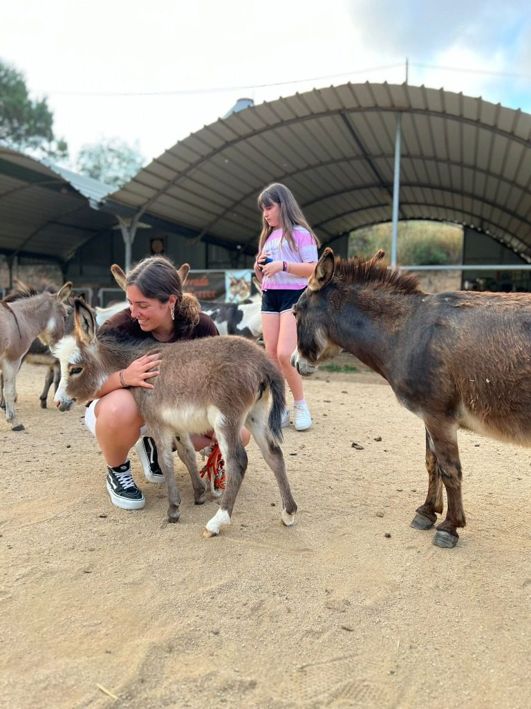
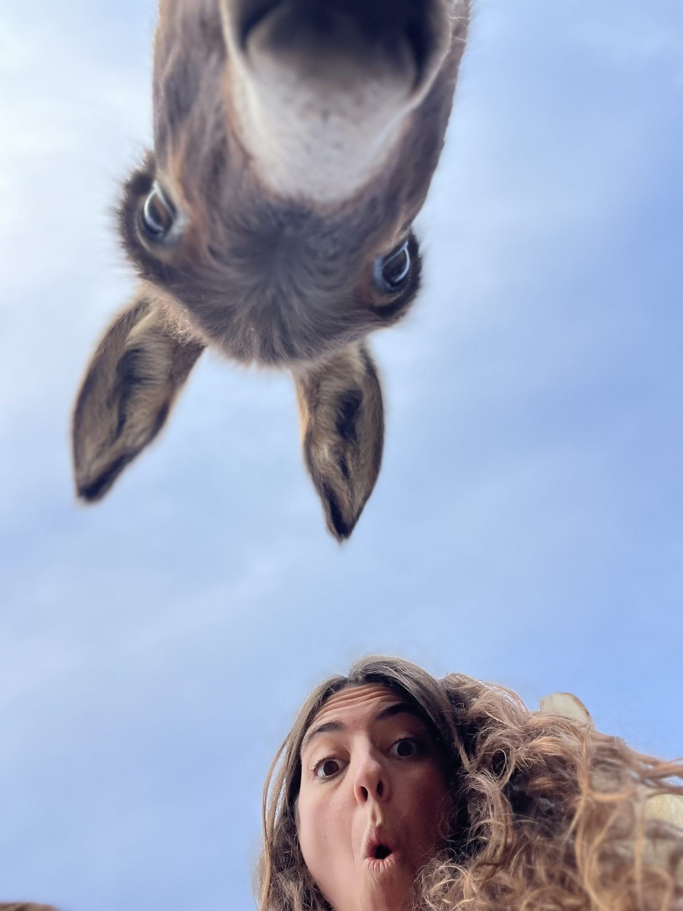

Gallery




Can Ferrer · Arenys de Munt
Meet our little donkeys up close, learn about their feeding, care and history in a magical tour of the farm.
Can Ferrer
"Feel the softness of their fur, listen to their breathing and let yourself be enveloped by the peace that these extraordinary beings emanate."
Our guided tour is not just a walk; it is an immersion into the world of the Mediterranean miniature donkey. For 1 hour and 15 minutes, we open the doors of our home for you to discover the nobility of these animals.

Gallery


Frequently asked questions
It lasts 1 hour 15 minutes. You'll meet the donkeys up close and learn about their diet, their care and their history.
Prices are per group: €30 for 2 people, €50 for 6 and €80 for 10. For groups of more than 10, ask us for a quote.
Yes, children of any age are welcome with an adult. Under-2s go free.
We'll find another date together at no extra cost. The booking isn't refunded, but your visit isn't lost.
Yes. Access is wheelchair-friendly and you're welcome to bring a pushchair.
You can park right next to the farm, on Carretera de Lourdes (C/ Subirans), Arenys de Munt.
Sorry, dogs aren't allowed on the farm.
By Bizum before the visit or in cash. There's no mobile signal at the farm, so we recommend paying by Bizum in advance.
Come and meet us
Carretera de Lourdes (C/ Subirans) · Arenys de Munt, Barcelona
Book nowView rates